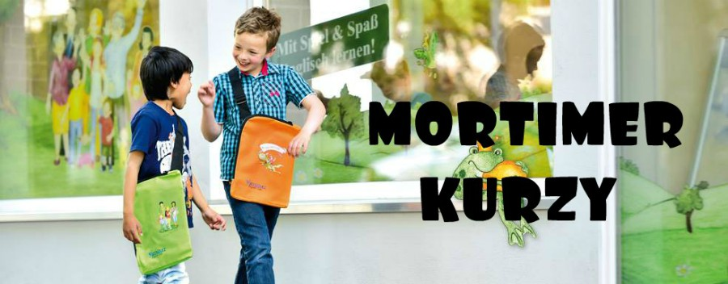

Kdo je to Mortimer?
Mortimer je rytíř ze středověku. Bydlí na opravdovém hradě a spolu se svými kamarády, drakem Malcolmem,
netopýrkou Betty a svým strýcem, čarodějem Godfreyem zažívá velká dobrodružství. A když už středověká
dobrodružství nestačí, stačí za úplňku kouzlit a přenést se v čase.....z minulosti do budoucnosti
S námi se každý naučí anglicky mluvit příjemnou formou a bez nátlaku....
Mortimer a parta jeho kamarádů učí anglicky tak, že imitují učení se mateřskému jazyku. Angličtina je
podávána a přijímána “všemy smysly”. Je to především zábava! Naše vlastní výukové materiály doplňují výuku
stejně, jako velké množství her, říkadel a didaktických pomůcek.
Metoda výuky podle Mortimera byla vyvinuta před dvaceti lety. Od té doby přibylo mnoho kurzů, původní
se rozšířily a všechny výukové materiály se několikrát aktualizovaly.
Metoda “mateřského jazyka” s Mortimerem je v současné době ve 20 zemích světa, kde se učí desítky tisíc
studentů. Nejmladším studentům jsou dva roky a nejstarší studentce je nyní 87 let.
Jaká je výuka s Mortimerem?
Hodiny probíhají v malých skupinkách 4 – 8 žáků a to jak u dětí, tak i u dospělých. U malých dětí,
navštěvujících program English for Minis garantujeme maximálně šest dětí ve skupině. Lekce pro děti se
konají jednou týdně 45 minut a pro dospělé 90 minut. Jsou vedeny proškolenými a neustále vzdělávanými
lektory v metodice Mortimer. Výuka probíhá v neformální, příjemné atmosféře. Hodiny jsou připraveny tak,
aby se nikdo nenudil a každý měl dostatek prostoru hovořit. Hodiny probíhají výlučně v anglickém jazyce. Ve
výjímečných případech, např. vysvětlování pravidel náročnějších her, může lektor použít tzv. sendvičovou
metodu, kdy češtinu použije podprahově.
Důraz je dáván především na porozumění mluvenému slovu a skládání jednoduchých vět. Děti čtou a píší
později, dospělí toto zvládají již od první lekce.
Všechny kurzy pro děti jsou doplněny poslechovými CD, pohádkovými a výukovými knihami. Kurzy pro dospělé
jsou doplněny výukovou knihou, slovníčkem a poslechovým CD.
Mortimer má pro své studenty připraveny na dvě stovky výukových her a cvičení, pomocí kterých rozmluví
úplně každého.
Jak dlouho mohu navštěvovat kurzy?
S Mortimerem můžete kurzy navštěvovat různě dlouhou dobu. Pro děti nabízíme až 10 let návazné výuky a pro
dospělé až 7 let. Senioři, kteří postupují pozvolněji, mohou naše kurzy navštěvovat déle.
Jaké jsou možnosti po absolvování kurzů?
Můžeme se pochlubit, že naše výuka a výukové materiály dostali mezinárodní ocenění a stali jsme se
oficiální přípravným centrem na Cambridge zkoušky. Dětští studenti našeho klubu mohou po třech letech
studia anglického jazyka složit mezinárodně uznávané zkoušky pro děti - Cambridge University YLE. Podmínkou
je pouze schopnost dětí číst a psát.
Zkoušky YLE jsou dobrým dokladem kvality výuky anglického jazyka v našem centru. Pro děti, které k nám
chodí, jsou výborným povzbuzením a dokladem o tom, jak dobří vlastně v angličtině jsou. Tato zkouška
podpoří víru dítěte ve vlastních schopnosti!
Zkoušky Cambridge YLE jsou připraveny syndikátem Cambridge ESOL, který je součástí světoznámé University of
Cambridge. Anglické zkoušky pro děti YLE jsou přehledné, zábavné a velmi důvěryhodné.
přihlásit se
After school je odpolední program probíhající na základních škola. Přesněji na Základní škole ve Staré
Boleslavi, V zelenči a v Brandýs nad Labemna základní škole Na Výsluní.
Blok začíná ve 13 hodin a končí v16 hodin. Během tothoto bliku se děti učí slovíčka, tvoří, hají různé hry v
angličtine, zpívají a pokud přeje počasí tak jdou i ven. Na každý měsíc máme určitá témata o kterých vás
skrze email informujeme na začátku měsíce.
CÍLE PROGRAMU:
- vybudovat privilegovaný klub pro děti bez rozdílu znalosti anglického jazyka
- dodat jim sílu a nemít strach z používání angličtiny
- nemít strach z chybování, ze špatné známky, z posměchu…
- zlepšení KOMUNIKAČNÍCH A POSLECHOVÝCH SCHOPNOSTÍ – děti se rozmluví
- děti se přestávají stydět mluvit anglicky (rozšiřují si slovní zásobu, zlepšují si výslovnost a fixují
často používané fráze)
- žádné pasivní posedávání a nudné biflování
- simulujeme reálné životní situace a role
- trénujeme praktické fráze v reálné komunikaci z běžného života
přihlásit se